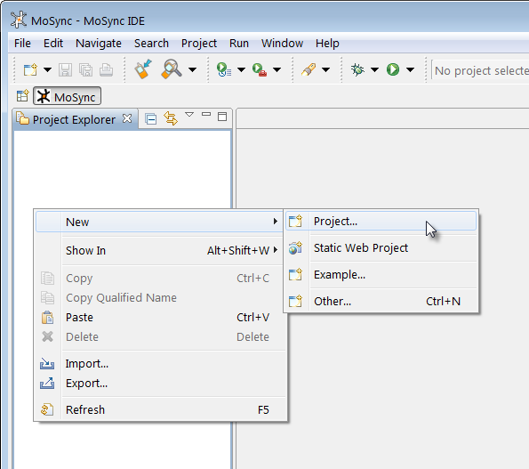

This tutorial walks you through the creation of a simple "Hello World" application in C/C++ using the MoSync IDE and introduces you to some of the basic terminology we use throughout our guides, tutorials, and examples.
If you have not installed the MoSync SDK, checkout the guides for Installing on Windows and Installing on OS X, depending on what operating system you use. There is also a guide to get you started Running the IDE.
Start by Launching MoSync. MoSync prompts you to select a workspace:
Click OK to accept the default path. The MoSync Eclipse-based IDE will open.
Register your copy of the MoSync SDK if you have not already done so. After registration, close the Welcome page if it is showing.
Right-click in the Project Explorer view:

(If you have hidden the Project Explorer view, you can show it again by selecting Window > Show View > Other > General > Project Explorer and then clicking OK.)
Create a new project using our C/C++ project template called C/C++ Moblet Project.
Call the project "HelloWorld". (To ensure compatibility with all platforms and devices, avoid using spaces in project names. It is always safe to use the underscore character.)
Your new project will now be created from the template and loaded in the MoSync IDE:
Edit the code in the main.cpp file shown in the main window so that it looks like this:
#include <MAUtil/Moblet.h>
using namespace MAUtil;
class MyMoblet : public Moblet
{
public:
MyMoblet()
{
maSetColor(0xFFFFFF),
maDrawText(0, 32, "Hello World!");
maUpdateScreen();
}
void keyPressEvent(int keyCode, int nativeCode)
{
if(keyCode == MAK_0 || keyCode == MAK_BACK || keyCode == MAK_SOFTRIGHT)
{
close();
}
}
void keyReleaseEvent(int keyCode, int nativeCode)
{
}
};
extern "C" int MAMain()
{
MyMoblet myMoblet;
Moblet::run( &myMoblet );
return 0;
};
Save your main.cpp file.
(If you would like to understand more about the code we just asked you to paste in, read our beginner's tutorial called Hello World, Deconstructed.)
Your application is now ready to be built and run.
Click on your project's name in Project Explorer view so that it is highlighted.
Now click the Run button on the IDE's toolbar (or press Ctrl+F11). Your project will be built. Choose to run your application in MoRE, the MoSync SDK's default emulator:
Congratulations, you have now compiled and executed your first MoSync program!
It's a very simple C/C++ program that introduces you to some of the fundamentals of the MoSync API and event handling.
Experiment with building the same project for a native emulator or simulator (see Installing and Working with Native Emulators).
A good starting point if you are new to the MoSync SDK is the Beginner's Guides. Here you will find short example programs and explanations of programming concepts used in a MoSync C++ app. If you are interested in the MoSync SDK's HTML5 capabilities, see Getting Started with HTML5 and JavaScript.
In our IDE User Guides you will find extensive information about the MoSync IDE, including how to create projects from templates, how to use device profiles, doing bluetooth discovery and transfer, and how to use the MoRE emulator, the Debugger, the Finalizer, and MoSync's tools.
In our C/C++ Programmer Guides we teach how to use MoSync's classes, functions, and syscalls in your applications, and we also provide tips for creating applications that work across multiple platforms like iPhone, Android, and Windows Mobile.
We provide many Example Applications in the SDK itself, so you can see how we do it ourselves. If you are new to C/C++, we strongly recommend that you spend some time examining the code of our "Hello" series of applications: they are extremely well-commented so that you can understand exactly what is happening in every line of code.
At our website you can find many resources for developers, including our developer forum, and links to our code repositories and issue tracking systems.
Have fun, and good luck!